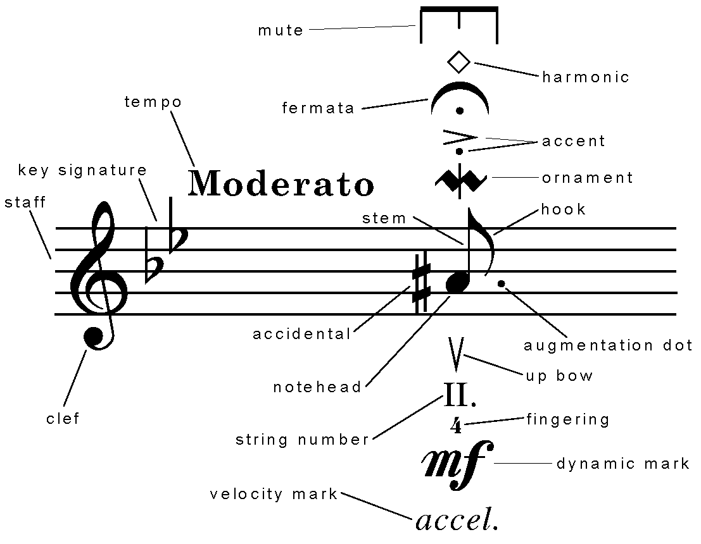
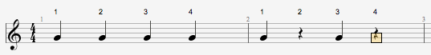
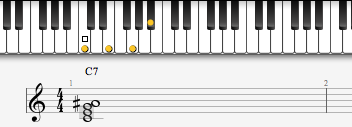
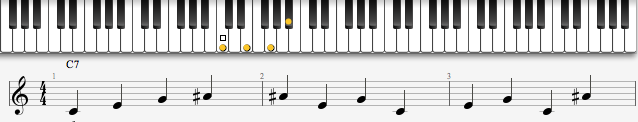
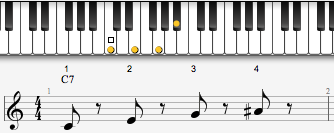

An Improvisational Journey
Welcome,
my name is Joan Torres and this is a special lesson on how to begin understanding musical improvisation.
Musical improvisation is a wonderful thing. However, there are many listeners as well as novice performers who don't necessarily understand the depths of improvisation. This usually leads to a lot of confusion determining what works and what doesn't. Some soloists amaze with a few notes and others with many. None are better than the other, they are just different. However, by diving into what improvising entails we can begin to discover what it is that we enjoy about our favorite performers.
Before Improvisation
We can begin this journey with music before improvisation. As far as we know, primitive music did not necessarily achieve a high level of musicianship. It is believe that most primitive music was mainly used in rites and ceremonies. The experience was perhaps more about connecting with the spiritual rather than displaying skill or telling a story. However, as time went on music became more common in different sort of activities. Musicians needed a way to communicate accurately which is why eventually a standard notation system was developed.
The creation of a standard musical notation meant rules were set in place so music could now be preserved on paper. This meant learning a song or a musical piece was slightly easier as long as you understood the notation. Therefore, music began to grow. Traditions were set, challenged and elaborated on. The simpler traditions from Medieval and Renaissance periods were expanded on through Baroque, Classical and Romantic periods. It is through these periods that music begins slowly shifting from a mostly-church-oriented activity to an art-form the masses enjoy.
Early Improvisation
During the more Baroque period there were many concepts musical concepts such as tonality and many techniques developed to enrich music. Most music aimed at displaying virtuosity and thus improvisation was a highly valued skill. However, with the exception of certain musical sections such as cadenzas or preludes, the performer was mostly still performing what the composers had written. Notable composers such as Johann Sebastian Bach and Antonio Vivaldi lived in this period. These composers would have jobs as main composers for a church or an emperor at the time. Therefore, most of their compositions were requested works. However, during the transition between the Baroque period and the Classical period Wolfgang Amadeus Mozart, a man who would change this mentality, was born.

Notable for having acquired a high level of proficiency in music at a very young age, Mozart defied many rules and became a prolific and influential composer. Mozart loved composing music. He had so many ideas he would keep on writing music that no one even requested he write. This practice was considered odd since he wouldn't necessarily ever be able to hear what he wrote until an orchestra performed it and that would've only been possible if his composition was allowed to be presented to the public. However, as a child Mozart had acquired the ability we now call "perfect pitch", which means he could recall a note by ear without any prior tonal reference. He could listen to an orchestra and know exactly which notes everyone was playing just by listening. So when it came to composing he was compelled to write music as he heard it in his head and as he KNEW it would sound when performed. His musical experience was a very personal one. As music slowly begins to become more personal, so does improvisation.
Taking Off
During earlier periods of music, the composer was the heart of the music. What you could hear was his idea and the image he was trying to convey. During any improvisational sections the performer had certain rules, ideas or motifs to follow. He couldn't roam free or else he would lose the composer's original idea. Instruments such as the piano became more common during later periods. Composers would write concertos featuring only a pianist. Composers such as Ludwig van Beethoven, Frederic Chopin and Franz Liszt would write many musical works featuring only piano which they would also perform. Their virtuoso skills as well as their musical proficiency led to them having many personal compositions with prominent use of improvisation. However, it wasn't until the 20th century when a musical group could successfully perform together having improvisation be a central role of their collective performance.
All That Jazz
As music kept on growing, it became even more accessible to the public. Many could learn to play a musical instrument and music became pervasive in people's lives. The musical genre we now know as Blues features heavy use of improvisation. This kind was mostly based around a set of agreed-upon chord changes and the use of your ear to figure out what to play next. Blues slowly branched out into what became Jazz music. During this period Jazz players began to explore many of the possible changes as well as notes that could work while improvising. As a result, different styles and approaches to group improvisation began to grow.
BEBOP
Jazz performers developed a sound throughout years of exploration that became known as Bebop. As usual with any style in earliest days, there were a set of unspoken rules most players abided by:
Taking first a musical bar in 'common-time', which means a count of four beats will be a musical bar or measure.
Then Taking a commonly-used chord such as C7
The performer could fit the individual notes of the chord, known as the 'chord tones', within a musical bar in any order he or she might enjoy at the moment.
However, each chord usually only has four chord tones. Even if the performer were to play them anywhere they might be on his or her instrument, the result might not be as musical and it could easily become repetitive even across different performers. How would a performer develop his own voice with such limited choices?
One of the first answers came from using the chord tones only ON the beat and using any other approach notes on the space between each beat, known as the upbeat.
Click here to listen to a simple example around this bebop improvisational rule for a C7 chord.
That audio example was made using only chord tones on the beat, also reffered to as the downbeat, in different orders and different approach notes on the upbeats. Although, mostly what is called chromatic approach notes were used to give it a more bebop flavor.
The bebop sound had set many more unspoken rules. However, the players were still a bit limited since using any crazy approach notes on upbeats could potentially lead to many 'wrong-sounding' notes. Therefore, this practice would only work well when tunes were played really fast because the wrong notes would last so little they would hardly be noticeable. This presented quite a challenge when playing slower tunes and wanting to sound within the current chord. Furthermore, the obligatory chord tone on the downbeat were considered shackles to many performers. They needed something more.
Modal and Cool Jazz
Jazz musicians reacted against the fast-paced, note-filled bebop era with Cool Jazz. During this time slower, lighter tunes were performed. Musicians focused on developing musical ideas, rather than playing as many notes as possible within each chord. Where Bebop had 2 chords in each bar, Cool Jazz could have the same chord for 8 bars. So now performers had slower tunes with less chords... they could run out of ideas pretty quickly following the Bebop mentality. Musicians such as Miles Davis, Bill Evans and John Coltrane defined this era by exploring each chord and how any note would create a certain degree of tension or unity that could define how that chord would sound. Their recordings became the basis of study for many people for years. One of these was George Allen Russell.
George Russell is considered one of the most important Jazz musicians to contribute to general music theory with concepts he discovered from studying Jazz performances and recordings. His work could arguably be considered the foundations for what we now call, Jazz Theory.
According to his work musicians had been doing this unknowingly for years. He proposed that there were a set of scales for each kind of chord (minor, major, dominant, diminished, etc.) that when performed would stay in what he called 'unity' with the chord. This meant the scale and the chord did not create any unwanted tension that would force the ear to want to resolve it by moving to another chord. Instead, the performer could expand the sound of that chord playing notes other than the chord tones without sounding out of place or dissonant. Some of these scales existed already but were called 'modes' in general music theory. The use of modes as chord scales provided the foundations for Jazz and improvisational soloing studies for years to come.
Modal improvisation eclipsed any other approach to improvising, transcended the Jazz culture and can now be heard on virtually any performer and skilled improviser across any musical genre.
Da Capo al Coda
"There's a way of playing safe, there's a way of using tricks and there's the way I like to play, which is dangerously, where you're going to take a chance on making mistakes in order to create something you haven't created before." - Dave Brubeck
It is no secret that becoming a master improviser in music takes enormous amounts of effort and time. Whichever road a musician may take to get there works as long as he or she is honest with himself and practices correctly to reach that point. Some of our favorite musicians are probably those who have reached such heights as performers that they have their own unique voice and style after years and years of experience. The journey is hardly ever over. There's always room to grow. However, I want to bring attention to some of those other performers, the ones who aren't entirely honest with themselves.
Today we can go to a store and find the solos by our favorite musicians transcribed and being sold on books for us to learn to play like them. This led to what we call licks, a musical phrase we can transpose to many keys and have it fit with many chords. Today's competitive world has seen musicians trying to achieve virtuoso status by learning a lot of licks and using them 'safely' across tunes for years and years. They work. There's no doubt about that. They fit. Nonetheless, is this really improvisation?
Vibraphonist, composer, master improviser and educator Gary Burton once taught his students something which I'm willing to share today. Imagine trying to learn German. After taking all four German courses offered at his college and perfecting his pronunciation, a student decides to buy a book of common phrases. He learns the book perfectly and travels to Germany. He practices his skills. Any passerby who hears him talk might actually confuse him for a German. However, what might happen if one of these people sits down to talk to him about life, philosophy, politics, religion? His list of common phrases will have not covered all of that so now it's his time to shine and use what he knows to really express his views on these subjects. He may make it through but it is more likely that he may slow down and have to think too much, make mistakes and even choke a bit because he lacks the practice a native has expressing himself in German. The phrases surely got him closer, but if he stops there he is never going to achieve native proficiency.
Musical Improvisation is about being able to say something, express an emotion in the moment without prior preparation. The road to the highest proficiency is a long one filled with taking risks and making mistakes. Just as we learned as babies to speak our first language by speaking, making mistakes, figuring out what went wrong and correcting that, we can learn musical improvisation. We started learning without even knowing the alphabet, syntax rules or even correct pronunciation. However, we learned and we acquired our own voice. Each time we open our mouths we improvise without thinking about the rules, the syntax or the spelling. This is the goal to learning any language. Likewise, such is path for the musician who is looking to master improvisation.
Recommendations
Favorite Improvisers
- Jaco Pastorius
- Miles Davis
- John Coltrane
- Chick Corea
- Pat Metheny
- Herbie Hancock
- McCoy Tyner
- Miguel Zenon
Suggested Records
- Kind of Blue by Miles Davis
- A Love Supreme by John Coltrane
- Heavy Weather by Weather Report
- Forever by Corea, Clarke & White